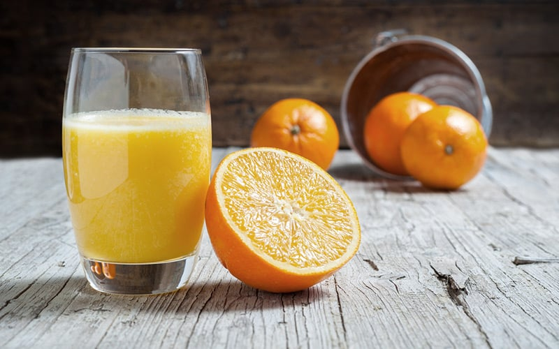
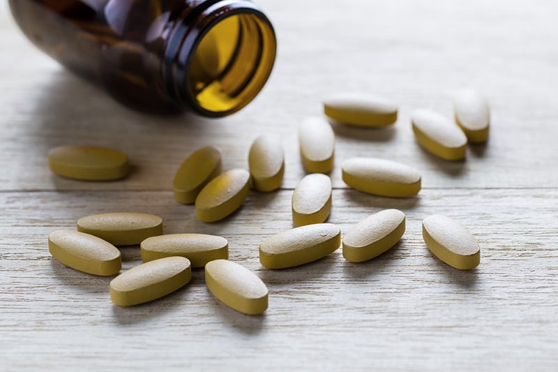
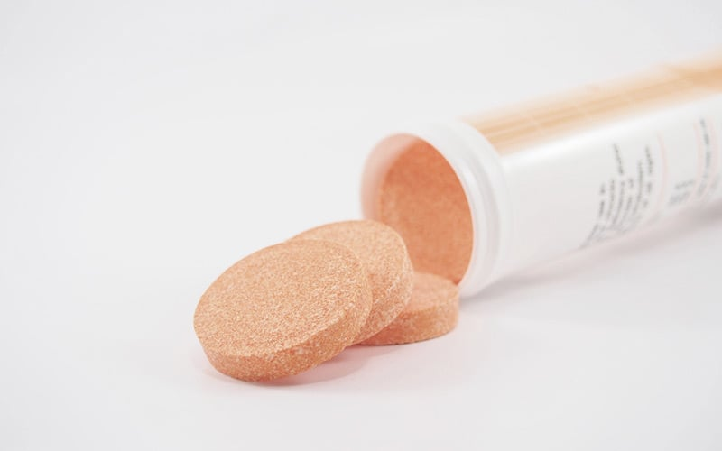

វីតាមីន C ជួយថែរក្សាសម្រស់ និងបង្កើនដល់ចរន្តឈាម។ វីតាមីននេះជួយកាត់បន្ថយនូវអុកស៊ីសែនសកម្ម និងការពារស្បែកពីភាពចាស់ ជួយបំបាត់ស្នាម អុជខ្មៅ និងស្នាមអុជពណ៌ត្នោតនៅលើស្បែក។ វីតាមីន C ក៏ជួយកាត់បន្ថយការផលិតជាតិពណ៌មេឡាញីនផងដែរ។ វីតាមីនC មាននាទីការពារអង់ស៊ីម tyrosinase មានន័យថាវាមានការកំណត់នូវការបំប្លែងសារជាតិមេឡាញីន ការពារការបង្កើត និងមានឥទ្ធិពលលើមេឡានីន។
វីតាមីនC អាចជួយឲ្យស្បែកប្រឆាំងនឹងរ៉ាឌីកាល់សេរីដែលបណ្តាលឲ្យស្បែកឆាប់ចាស់ និងកាន់តែខ្មៅ។ ក្រៅពីនេះវីតាមីនC ក៏ជួយបង្កើននូវបរិមាណជាតិស្ករ glutathione និងវីតាមីន E ក្នុងរាងកាយផងដែរ ដែលសារធាតុទាំងពីរនេះត្រូវបានគេស្គាល់ ថាជាសារធាតុប្រឆាំងអុកស៊ីតកម្ម។ Glutathione ក៏ជួយឲ្យស្បែកផលិត pheomelanin ជំនួសឲ្យ eumelanin ផងដែរ ជាលទ្ធផលដែលធ្វើឲ្យស្បែកយើងភ្លឺថ្លាជាងមុន។
វីតាមីនC ក៏ជួយដល់បំបាត់ស្នាមដែលមានបន្ទាប់ពីការជាសះស្បើយពីរបួស ឬបង្កើតស្បែកឡើងវិញបន្ទាប់ពីការកើតមុន ជួយដល់កោសិកាកូឡាជែន បង្កើតភាពយឺត និងភាពរឹងមាំរបស់ស្បែក។ វីតាមីននេះថែមទាំងបង្កើនការបញ្ចេញក្រពេញសេបូម និងរន្ធញើសតូចៗ។
កង្វះវីតាមីនC ធ្វើឲ្យយើងងាយនឹងមានបញ្ហាស្បែក។ ឧទាហរណ៏ ស្បែកងាយមានស្នាមជាំ មានការហូរឈាម និងកាត់បន្ថយនូវសមត្ថភាពក្នុងការជាសះស្បើយ។

និយាយតាមបែបវិទ្យាសាស្ត្រ មនុស្សគួរតែទទួលទានវីតាមីន C 1,000 មីលីក្រាម ក្នុងមួយថ្ងៃ ដើម្បីជួយដល់ប្រព័ន្ធការពាររាងកាយ និងការថែរក្សាស្បែក។ ប៉ុន្តែសម្រាប់អ្នកដែលឧស្សាហ៍កើតជំងឺផ្តាសាយ ឬអាលែកហ្ស៊ី អ្នកគួរតែលេបថ្នាំវីតាមីន C ២,០០០ មីលីក្រាម ឬច្រើនជាងនេះ។ នេះអាស្រ័យលើស្ថានភាពរាងកាយរបស់មនុស្សម្នាក់ៗ។ បើចង់ដឹងច្បាស់ថា វីតាមីនរាងកាយត្រូវការប៉ុណ្ណានោះ អ្នកត្រូវទៅពិគ្រោះជាមួយវេជ្ជបណ្ឌិតជំនាញ។
ការប្រុងប្រយ័ត្នជាមុន
អ្នកគួរតែពិគ្រោះជាមួយវេជ្ជបណ្ឌិតរបស់អ្នក មុនពេលទទួលទានវីតាមីន C ក្នុងបរិមាណខ្ពស់។

1-ទម្រង់គ្រាប់
វីតាមីន C ប្រភេទនេះជាទូទៅមានទំហំចាប់ពី 25 – 1,000 មីលីក្រាម ប៉ុន្តែទំហំដែលពេញនិយមបំផុតគឺ 500 និង 1,000 មិល្លីក្រាម ប្រសិនបើអាច អ្នកគួរតែជ្រើសរើសប្រភេទដែលត្រូវបានកំណត់ថាជាប្រភេទ Buffered, Sustained Release ឬ Slow Release ព្រោះ។ វីតាមីន C ខ្លួនវានឹងបញ្ចេញបន្តិចម្តងៗពីថេប្លេត វីតាមីន C មានរយៈពេលយូរ។ វាក៏ជួយមិនរលាកក្រពះផងដែរ។ ប៉ុន្តែកម្រិតនៃវីតាមីន C នៅក្នុងចរន្តឈាមដែលត្រូវបានគ្រប់គ្រងគឺមិនខុសពីថ្នាំគ្រាប់វីតាមីន C ធម្មតាដែលបញ្ចេញភ្លាមៗនោះទេ។

2-ទម្រង់ lozenge
មានចាប់ពី 25 – 500 មីលីក្រាម សាកសមសម្រាប់អ្នកដែលមិនចូលចិត្តលេបថ្នាំ។ ប៉ុន្តែត្រូវចាំជានិច្ច តាមរយៈការបឺតគ្រាប់វីតាមីន C ញឹកញាប់ អាស៊ីតដែលចេញមកនឹងធ្វើឱ្យស្រទាប់ធ្មេញស្តើង ហើយធ្វើឱ្យរលួយ។
3-ទម្រង់ថេប្លេតដែលអាចទំពារបាន។
ជាធម្មតាវាមានទំហំ 30 មិល្លីក្រាម ដែលស័ក្តិសមសម្រាប់កុមារព្រោះវាមានរសជាតិផ្អែម និងទាក់ទាញ។ ប៉ុន្តែអ្នកត្រូវតែប្រយ័ត្នវា។ ជាមួយនឹងបរិមាណជាតិស្ករខ្ពស់ វាអាចបណ្តាលឱ្យពុកធ្មេញនៅពេលទទួលទានជាប្រចាំ។
4- ទម្រង់ថេប្លេត Effervescent
ជាធម្មតាវាមានទំហំ 500 និង 1,000 មីលីក្រាម វិធីត្រឹមត្រូវក្នុងការយកវាទៅរំលាយវាក្នុងទឹករហូតដល់ពពុះបាត់។ ដោយសារតែពពុះឧស្ម័នដែលបង្កើតនៅពេលទទួលទានអាចបណ្តាលឱ្យឈឺក្រពះនៅពេលក្រោយ។ វីតាមីន C ប្រភេទនេះសាកសមសម្រាប់អ្នកដែលមិនអាចលេបថ្នាំគ្រាប់ធំបាន។ អត្ថប្រយោជន៍គឺវាស័ក្តិសមសម្រាប់មនុស្សចាស់ដែលមានបញ្ហាស្រូបចូល។
ទទួលទានវីតាមីន C ដើម្បីស្បែកស្អាត VS ទទួលទានវីតាមីន C ដើម្បីបង្កើនភាពស៊ាំ។
ទទួលទានវីតាមីន C ដើម្បីស្បែកស្អាត ពង្រឹងកូឡាជែន ស្បែកស ភ្លឺថ្លា ម៉ត់រលោង ជាទូទៅ វីតាមីន C ត្រូវតែទទួលទានក្នុងបរិមាណ 1,000 មីលីក្រាម ឬច្រើនជាងនេះក្នុងមួយថ្ងៃ។ នេះគឺច្រើនជាងគ្រប់គ្រាន់ដើម្បីការពារប្រឆាំងនឹងជំងឺផ្តាសាយ។ ហើយវាគួរតែជាវីតាមីន C ដែលចម្រាញ់ចេញពីធម្មជាតិ។ ដែលប្រសិនបើវាជាកម្រិតខ្ពស់នៃវីតាមីន C យកល្អគួរតែទៅពិគ្រោះជាមួយវេជ្ជបណ្ឌិត ដែលជាអ្នកជំនាញផ្នែកថែរក្សាស្បែក ឬប្រឆាំងភាពចាស់ ដើម្បីទទួលបានការណែនាំអំពីការទទួលបានវីតាមីន C ក្នុងបរិមាណត្រឹមត្រូវសម្រាប់រាងកាយរបស់អ្នក ដើម្បីទទួលបានលទ្ធផលកាន់តែប្រសើរ។